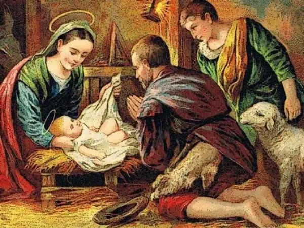
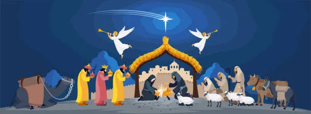

La celebración de la Navidad tiene sus raíces en un proceso de sincretismo religioso que comenzó en el siglo IV d.C., cuando la Iglesia Católica estableció el 25 de diciembre como la fecha del nacimiento de Jesús, coincidiendo con antiguas festividades paganas romanas como las Saturnales y el culto al Sol Invicto (dies solis invicti nati).
Establecimiento de la fecha: Aunque los evangelios no especifican la fecha de nacimiento, Sexto Julio Africano la vinculó con el 25 de diciembre alrededor del año 221 d.C. y el Papa Julio I la fijó oficialmente en el 350 d.C. para facilitar la conversión de los paganos romanos al cristianismo.

Evolución de las tradiciones:
Edad Media:
Las celebraciones incluían grandes banquetes, consumo de alcohol y música, con los villancicos surgiendo en el siglo XII.
Siglo XIX:
La festividad se transformó en una celebración familiar centrada en el hogar, popularizando el árbol de Navidad (de origen germánico) y la figura de Santa Claus (basada en San Nicolás).
Siglo XX:
Se consolidó como una fiesta secular y comercial, perdiendo gran parte de su carga religiosa para caracterizarse por el intercambio de regalos y reuniones sociales.
